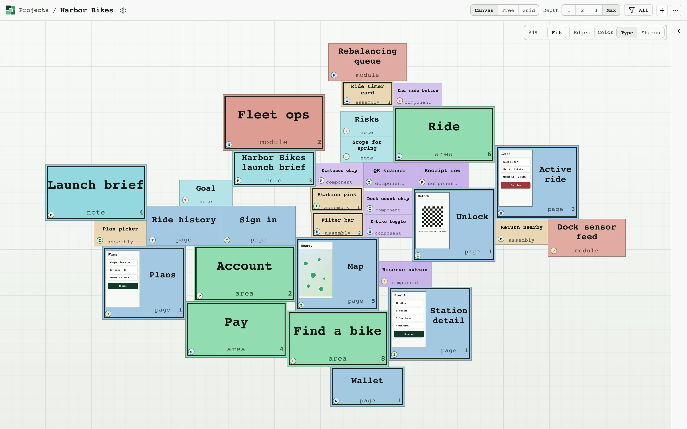

Start with districts
The six biggest boxes are the big ideas: Find a bike, Ride, Pay, Account, Fleet ops and a launch brief. This is Depth 1.
Add the blocks
At Depth 2, pages and modules appear next to the area they belong to. They are smaller, because they sit one level down.
Down to the rooms
At full depth, assemblies and components fill in as the smallest boxes. Size shows depth at a glance.
Children sit near their parent
Everything in Ride sits together: Unlock, Active ride, the timer card and the end button. Hover or tap any box to light up its branch.
Edges when you ask
Lines are off by default. Turn on Edges to trace parents and the cross-links: the End ride button depends on the Dock sensor feed, and so does the rebalancing queue.
Step inside a district
Double-click a box to isolate it. The canvas packs just that branch, so a big project stays readable one area at a time.
Each box holds its spec
Click a box to open it. Purpose, implementation notes, Markdown context, images and links live on the box.
Color by status
Switch Color to Status. Done work turns green, work in progress blue, and the blocked End ride button red.
Map your product as a town of boxes.
Ideas, screens and systems become nested boxes. Big concepts are big boxes, details are small, and related work sits together. You edit the map in a browser; your coding agents read and update it from the terminal.
$ npm install -g boxtown
$ boxtown viewerNeeds Node 22+. One 14 MB package with the viewer inside. No account and no database. Projects are Markdown files in ./boxtown/data.
A live map of the Harbor Bikes demo. Click a box. Double-click to step inside it. Drag to pan, ⌘/Ctrl + scroll to zoom.Tap a box. Double-tap to step inside it. Use the zoom buttons. Keyboard: Tab, arrows, Enter, Shift+Enter.

How a town of boxes works
A product has districts, blocks, buildings and rooms. A list flattens them; a graph with every line drawn turns into a hairball. Scroll to build the Harbor Bikes map one idea at a time. You can click the map at any step.
Hand the map to an agent
The boxtown CLI reads and writes the same project as the viewer, and writes show up in an open browser at once. Boxtown calls no LLM itself. Codex, Claude or any agent with a shell does the work and writes the result back. Run the commands below. The output is real, recorded from this demo.
The map updated: Active ride is now Implemented.
Teach the agent once
The package bundles a boxtown-context skill: when to use the CLI, and which commands keep the context small. node context-pack writes a whole branch to a folder, and image add attaches screenshots as proof.
$ boxtown skill install --agent codex --globalAgents reading this page: llms.txt has the short version. The npm README lists every command.
Screens from the app
The live map above is a slice of the canvas. These are the six views of the full app, on the same demo. Every view keeps its state in the URL, so a refresh or a shared link opens the same thing.
The whole project on one canvas
- Box size follows depth. Areas are big, components are small.
- Color follows type. Switch Color to Status to see what is planned, working, blocked or done.
- The number in a corner counts children. The letter badge is the status.
- Wheel to zoom, drag to pan, F to fit. Depth 1–3 hides the small boxes.
- Drop or paste an image on a box to attach it. The first image shows inside the box.
Everything about one box
- Click a box. The rest of the map dims, and the inspector opens on the right.
- Set status, priority and type from the menus at the top.
- Context is Markdown. Click it to edit; ⌘Enter saves.
- Images, metadata fields, connections and an activity log follow.
- Add child creates a box inside this one.
One branch at a time
- Double-click a box to isolate it with everything inside it.
- Linked adds the boxes it depends on or reuses.
- Edges draws the links when you need to trace them.
- The chip at the top says what is isolated. × goes back to the full map.
Read it like a document
- The same boxes as nested sections, with purpose, context and large images.
- Collapse branches, or use Expand all and Collapse all.
- The contents list follows the section you are reading.
- Change status and type in place, as on the canvas.
Edit many boxes fast
- One row per box, indented by depth.
- Edit type, status, priority and metadata fields in the cells.
- Select rows for bulk status changes or archive.
- / filters by name. Links lists the non-parent links.
Find any box
- ⌘K searches titles, ids, types, status, metadata and context.
- Each match shows where it hit and the box's depth.
- Pick a result to isolate it on the canvas.
- The side panel shows counts by status and the recent activity, including agent writes.
Your map is a folder
Each project is a folder of plain files. One Markdown file per box: front matter for the fields, the body for the context. Keep it in the repo next to the code it describes.
A child stores its parent, so a move changes one line. History is one write-once file per entry. Two branches that each add or edit boxes merge in git with no conflict.
boxtown/data/projects/harbor-bikes/
├── project.json name, node types, metadata fields
├── nodes/
│ └── page-active-ride.md
├── history/ one file per change
└── images/page-active-ride/---
id: page-active-ride
label: Active ride
type: page
status: working
priority: urgent
parent: area-ride
metadata:
purpose: Timer, cost so far, and the nearest docks with space.
---
## Active ride
The screen a rider looks at most. Keep it readable
at arm's length on a handlebar mount.
- Timer and cost update every second.
- **Return nearby** lists the three closest stations.Is it for you?
Worth it if
- You plan a product with many screens, parts and open questions, and a flat list hides how they fit.
- You hand work to coding agents and want them to read the right context, then report back in one place.
- You want planning data in your repo as files you can diff and merge.
Skip it if
- You need a team tracker with accounts, permissions and notifications. Boxtown is one person's local tool.
- You want to plan from a phone. The viewer is built for a desktop browser.
- You want AI inside the app. Boxtown leaves that to your agent.
Start
-
Open the viewer 1 minute
$ npm install -g boxtown $ boxtown viewerNeeds Node 22 or later. The viewer opens in your browser and keeps projects in
./boxtown/data. Pass--data-dirfor another folder and--portfor a fixed port. CtrlC stops it; the files stay. -
Map something real 10 minutes
$ boxtown node import-markdown --file ./brief.md --title "Brief" --split-headings \ --local ./boxtown/data --project <id>Create a project in the viewer, then import a brief: each heading becomes a child box. Add areas and pages with the + button, and paste screenshots onto them.
-
Hand it to an agent as needed
Install the skill (see Hand the map to an agent) and point the agent at a box. With
--local, commands reuse an open viewer, or start a short-lived one and stop it after.
From source: clone the repo, run pnpm install, then pnpm --dir app dev. The app picks up ./boxtown/data at the repo root.
How I built it
I started this in April 2026 as Product Grid Management, a place to keep the structure of an app next to the notes and screenshots for each piece. The first versions called LLM providers from inside the app. I took that out. Codex and Claude now write content through the CLI, and the app only holds the result.
The stack is SolidStart, SolidJS and Panda CSS. The CLI ships a production build of the app, so boxtown viewer is the same app with no server to set up. Codex and Claude wrote many of the pull requests. Boxtown held the issues, and the agents used the CLI to read them and mark them done. In November 2026 I renamed it Boxtown, for the boxes and how they nest.